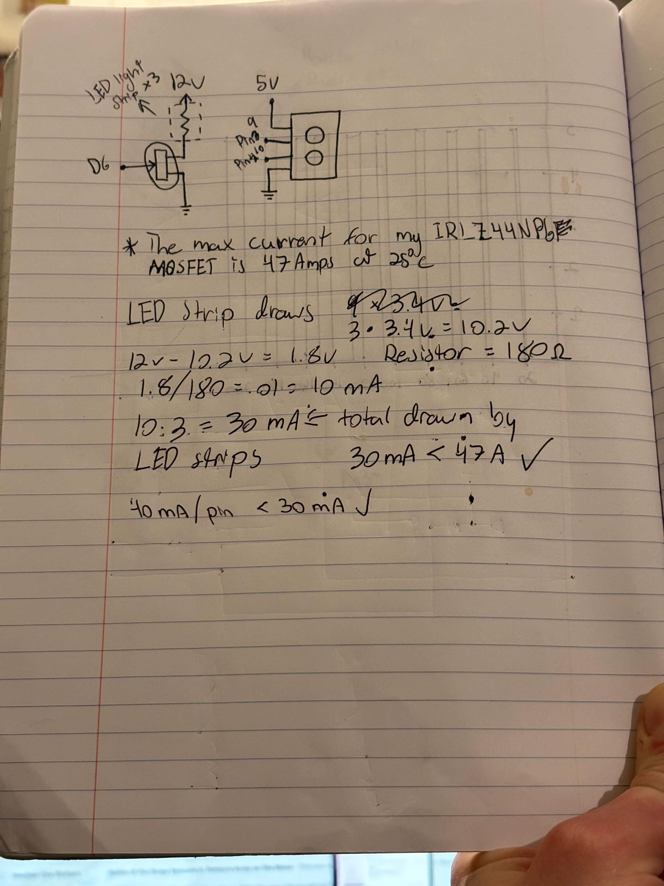
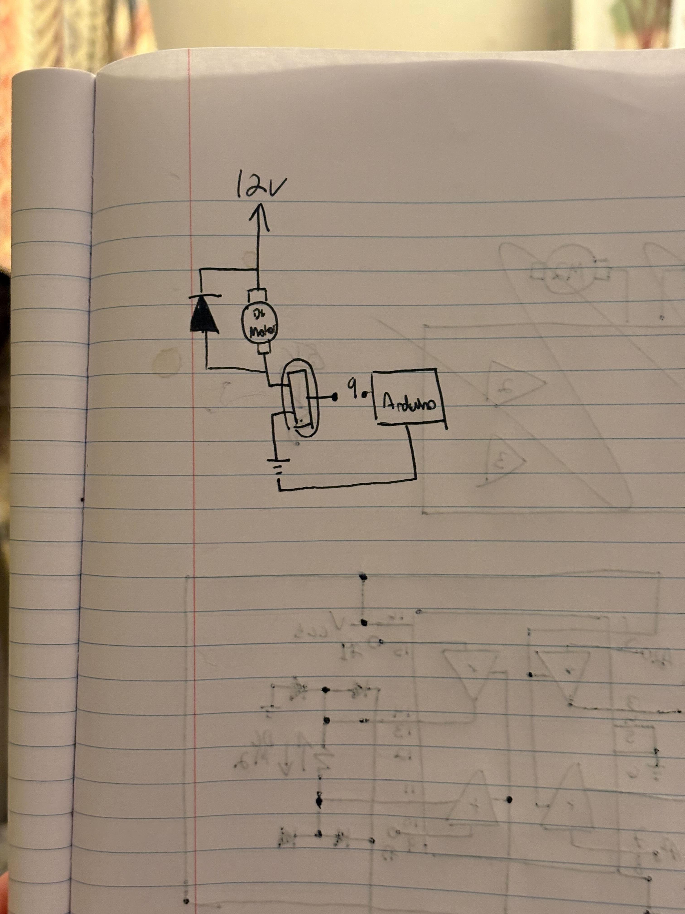
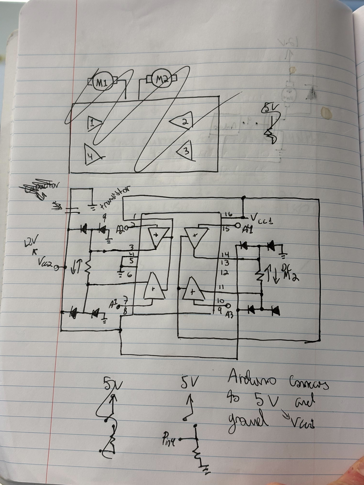

Assignment 5 builds on my assignment 4 extremely well, giving me the ability to revist the challenge of external power. I built a system that adjusts the brightness of an LED strip based on the distance sensed by an ultrasonic sensor. To learn how to use the ultra sonic sensor I engaged in Conversation with Claude. The schematic to the left shows the LED light strip, controlled by an IRLZ44NPBF MOSFET, whose max current is 47 Amps at 25 degrees Celcius, connecting to 12V power. The lights respond to the sensor which is connected to an Arduino's 5V pin, two digital pins, and a common ground to the Arduino and light circut.
Below is a video of the system in action and the code I used.
const int trig = 9; // Ultrasonic trigger pin
const int echo = 10; // Ultrasonic echo pin
const int MOSFET = 6; // MOSFET pin
const int minDistance = 5; // Minimum distance (cm)
const int maxDistance = 200; // Maximum distance (cm)
const int numReadings = 5; // Number of readings to average for smoothing
int readings[numReadings]; // Array to store distance readings
int readIndex = 0; // Index of array
long total = 0; // Running total of readings
int average = 0; // Average distance
void setup() {
Serial.begin(9600); // initialize serial communication for debugging
// initialize ultrasonic sensor pins
pinMode(trig, OUTPUT); // starts at LOW
pinMode(echo, INPUT); // starts floating
pinMode(MOSFET, OUTPUT); // initialize MOSFET control pin which starts at LOW
// initialize all readings to 0
for (int i = 0; i < numReadings; i++) {
readings[i] = 0;
}
}
void loop() {
// Get distance from ultrasonic sensor
long distance = getDistance();
total = total - readings[readIndex]; // Subtract the last reading
readings[readIndex] = distance; // Set new reading
total = total + readings[readIndex]; // Add the reading to the total
readIndex += 1; // Move to next position in array
// If at end of array, go back to beginning
if (readIndex >= numReadings) {
readIndex = 0;
}
average = total / numReadings; // Calculate average
// Map distance to LED brightness where closer is brighter and further is dimmer
int brightness = map(constrain(average, minDistance, maxDistance), minDistance, maxDistance, 255, 0);
analogWrite(MOSFET, brightness); // Apply brightness to LED strip
// Debug output
Serial.print(brightness);
delay(100); // Delay 100ms
}
// Function to measure distance using ultrasonic sensor
long getDistance() {
digitalWrite(trig, LOW); // Turn off sensor
delayMicroseconds(5); // Delay 5 microseconds
// Send 10 microsecond pulse to sensor
digitalWrite(trig, HIGH); // Turn on sensor
delayMicroseconds(10); // Delay 10 microseconds
digitalWrite(trig, LOW); // Turn off sensor
long duration = pulseIn(echo, HIGH); // read sensor
long distance = duration * 0.0343 / 2; // Calculate distance in centimeters
// ensure distance is within min and max
if (distance < 5) {
distance = minDistance;
}
if (distance > 200) {
distance = maxDistance;
}
return distance; // return distance sensed by ultrasonic sensor
}


int M1A = pin 3
int M1B = pin 6
int M2A = pin 14
int M2B = pin 11
void setup()
set all pins as OUTPUT
set all pins LOW
FUNCTION motor1_forward():
M1A = HIGH, M1B = LOW
Delay(10)
FUNCTION motorA_reverse():
M1A = LOW, M1B = HIGH
Delay(10)
FUNCTION motorB_forward():
M2A = HIGH, M2B = LOW
Delay(10)
FUNCTION motorB_reverse():
M2A = LOW, M2B = HIGH
Delay(10)
void loop()
// Phase 1 — Both forward
motorA_forward()
motorB_forward()
Delay(500)
motorA_reverse()
motorB_reverse()
Delay(500)
motorA_forward()
motorB_reverse()
Delay(500)
motorA_reverse()
motorB_forward()
Delay(500)